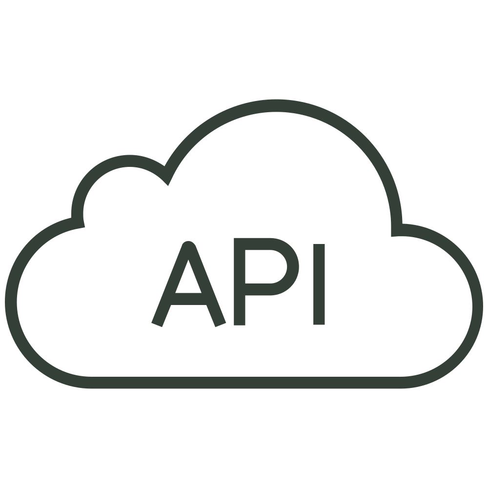
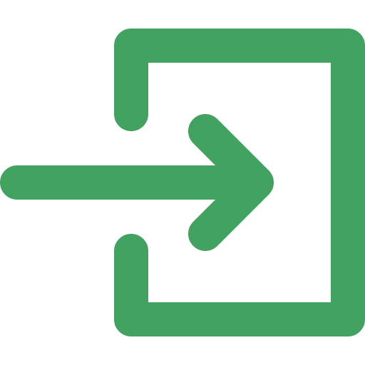

-
Star Wars API Search
- 
Exceeds Expectations
Live Site
More Info
Many sites — Twitter, Facebook, IMDB, and Wikipedia to name a few — offer a vast sea of data that you can access and display on your own web pages. Using JavaScript programming create a gallery of information and images by communicating with a third-party API (Application Programming Interface).
The Challenge
Use Star Wars API to grab data from at least 6 items from that API. Display these items on a page in an attractive gallery of images or titles. Clicking the image or title, opens a lightbox with detailed information about the item.
Skills Used
- JavaScript
- APIs
- jQuery, AJAX, JSON
-
Optimizing a Site for Performance
More Info
Web site performance is often a live-or-die metric for web sites and apps. Sites and apps that load, or appear to load, quickly are usually seen as being better built and more useful. You'll optimize a web site to improve its speed and performance.
The Challenge
Optimize graphics. Use HTML, CSS, and JavaScript to take a poorly optimized page and reduce the total load size to under 1.3MB. Analyze the assets you've been provided to see where optimizations can and need to be made, make those optimizations, and measure their success. Multiple analyzation, optimization, and measuring cycles may be required.
Skills Used
- Javascript
- Gulp
- NPM
-
Web App Dashboard
More Info
Build an interactive dashboard for a web application using advanced web techniques including SVG graphics and JavaScript programming. The project involves creating tables, charts, graphics and other user interface components in a manner that promotes interactivity and usability.
The Challenge
Take a mockup and a few icons and build a beautiful, web dashboard complete with JavaScript-driven charts and graphs. Take the design and create the HTML, CSS and JavaScript functionality for this one page.
Skills Used
- Chart.js
- Javascript and jQuery
- CSS Animations
-
Interactive Photo Gallery
More Info
Interactive image galleries are a common feature of many websites, from photo sites to e-commerce applications. Use HTML, CSS and the popular programming language JavaScript to create an interactive, searchable gallery of photos.
The Challenge
Create an interactive photo gallery using JavaScript and jQuery. Thumbnails and photos were provided with descriptions. At the top of the page you'll have a search area where photos will hide and show depending on user input. When the user clicks on a thumbnail the photo will display in a lightbox. There should be a back and previous buttons to cycle through photos.
Skills Used
- JavaScript Loops, Arrays and Objects
- jQuery
- jQuery Plugins
-
Interactive Video Player
More Info
Video, and the interface used to control the video, is increasingly important for many different kinds of web applications, including web site landing pages, blogs, podcasts, product marketing and training.
The Challenge
Build an HTML5 video player using JavaScript and the HTML5 Video API. Using the supplied mockups, video files, and transcript, build an interactive video player that synchronizes the video and the transcript. The transcript should be placed below the video, and should highlight as the video progresses. When a user clicks any part of the transcript it should take them to the appropriate place in the video.
Skills Used
- HTML5 Audio and Video
- JavaScript
- HTMLMediaElement
-
Accessibility Refactor
More Info
Accessible web sites allow anyone and everyone to use the web, regardless of physical or hardware differences. They also, generally, make sites faster to download and improve a site's search engine friendliness. Modify a website to make it more accessible for users and search engines.
The Challenge
For this project you will modify the website files provided for the rock band “Accessible Frog" to improve the site's accessibility for users.
Ensure that the foreground text and background color of your site have sufficient contrast.
Ensure the image link icons in the footer have accompanying text describing the link without displaying text on the page.
Skills Used
- HTML Forms
- HTML Tables
- Aria Landmark Roles
-
CSS to SaSS
More Info
Sass is an important tool in a modern Front End Web Developer’s toolbox. It's used by many developers to make styling web pages with CSS easier and faster.
The Challenge
Use programming principles to refactor a standard CSS stylesheet to Sass by identifying repeating patterns, using variables, and adding mixins.
Skills Used
- CSS
- SaSS
- SVGs
-
SVG Site Refactor
More Info
Master Scaleable Vector Graphics. SVG graphics are quickly becoming one of the most widely used graphic formats on the Web. Modernize the user interface of a web page by adding, styling and optimizing SVG graphics.
The Challenge
Replace the background pattern PNG with the matching SVG (background.svg). Use CSS to resize the SVG to match the original design. Replace rasterized PNG logo with the SVG logo image of the same size (logo.svg): use the inline SVG method to add it (you'll use CSS to modify the image). At a page width of less than 420 pixels remove the text from the logo and add an H1 tag that contains the logo text. Replace dogs with SVG images of the same size using the
Skills Used
- CSS
- Animating SVG with CSS
- CSS Animations
-
Forms
More Info
Web forms appear everywhere online. It's an essential skill to have in your Front End toolbox. Forms allow users to order books, sign up for web sites, and post to Facebook.
My favorite part of this project was using CSS to animate the checkboxes & inputs.
The Challenge
Use a .jpg mockup, supplied by the designer, to build a responsive, mobile-first registration form using a variety of HTML form elements.
Skills Used
- HTML Forms
- CSS Selectors
- CSS Animations